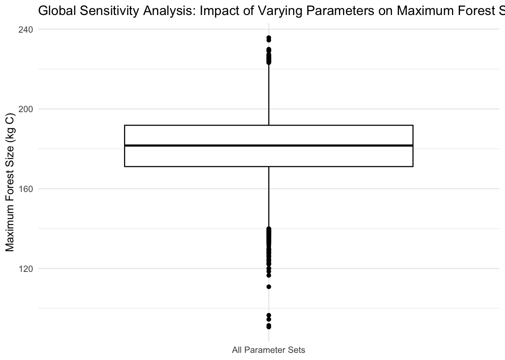

# load packages
library(tidyverse)
library(deSolve)
library(sensitivity)Link to GitHub Repository
Context
This project was completed for my Modeling Environmental Systems class, taken as part of my Master’s program at UC Santa Barbara. Provided with data and questions, I carried out this analysis using appropriate modeling techniques.
Question
Based on essential parameters, how is forest size likely to change over 300 years, and which of the parameters are likely to be the most influential?
Project Summary
Generated stochastic parameter sets for forest size model inputs (exponential growth rate before canopy closure, linear growth rate after canopy closure, carrying capacity, and canopy closure threshold) and used an ordinary differential equations solver to run 300-year continuous dynamic simulations of forests. Conducted global sensitivity analysis (ran 2,000 simulations and computed Sobol indices of input parameters) to look at impact of varying parameter values on maximum forest size.
Data
Data was synthetically generated for this project based on typical ranges for the essential parameters.
Setup
Source forest growth function
For the purposes of showing the complete documentation for the function that I am working with, I have included the full contents of the R script that was sourced when I originally conducted this analysis.
#' Forest growth derivative
#' @param time time since start
#' @param C forest size (carbon)
#' @param parms - as list with four values: r, g, K, threshold
#' @param r exponential growth rate before canopy closure
#' @param g linear growth rate after canopy closure
#' @param K carrying capacity
#' @param threshold canopy closure threshold
#' @return derivative of forest size with time
dforestgrowth = function(Time, C, parms) {
if (C < parms$threshold) {
dC = parms$r * C
} else {
dC = parms$g * (1 - C/parms$K)
}
return(list(dC))
}Run model for 300 years (using the ODE solver)
# set number of parameters
np = 2000
# generate parameter sets for sensitivity analysis
r_exp = rnorm(mean = 0.01, sd = 0.002, n = np)
g_linear = rnorm(mean = 2, sd = 0.5, n = np)
K_capacity = rnorm(mean = 250, sd = 50, n = np)
threshold_closure = rnorm(mean = 50, sd = 10, n = np)
X1 = cbind.data.frame(r = r_exp, g = g_linear, K = K_capacity, threshold = threshold_closure)
r_exp = rnorm(mean = 0.01, sd = 0.002, n = np)
g_linear = rnorm(mean = 2, sd = 0.5, n = np)
K_capacity = rnorm(mean = 250, sd = 50, n = np)
threshold_closure = rnorm(mean = 50, sd = 10, n = np)
X2 = cbind.data.frame(r = r_exp, g = g_linear, K = K_capacity, threshold = threshold_closure)
# fix negative values
X1 = X1 %>% map_df(pmax, 0.0)
X2 = X2 %>% map_df(pmax, 0.0)
# create Sobol object and get parameter sets for running model
sens_P = sobolSalt(model = NULL, X1, X2, nboot = 300)
# add names to parameter sets
colnames(sens_P$X) = c("r", "g", "K", "threshold")
# set initial forest size and simulation times
Cinitial = 10
simtimes = seq(from = 1, to = 300)
# run model with first parameter set
parms = list(r = sens_P$X[1, "r"], g = sens_P$X[1, "g"], K = sens_P$X[1, "K"], threshold = sens_P$X[1, "threshold"])
result = ode(y = Cinitial, times = simtimes, func = dforestgrowth, parms = parms)
result = as.data.frame(result)
colnames(result) = c("time", "C")
# plot results
ggplot(result, aes(time, C)) +
geom_line() +
labs(x = "Time (years)", y = "Forest Size (kg C)", title = "Forest Growth Trajectory") +
theme_bw()
Conduct a global sensitivity analysis looking at variation in maximum forest size
# function to compute maximum forest size
compute_max_forest_size <- function(carbontime) {
max_size <- max(carbontime$C)
return(list(max_size = max_size))
}
# set number of parameters
np <- 2000
# generate parameter sets for sensitivity analysis
r_exp <- rnorm(mean = 0.01, sd = 0.001, n = np)
g_linear <- rnorm(mean = 2, sd = 0.2, n = np)
K_capacity <- rnorm(mean = 250, sd = 25, n = np)
threshold_closure <- rnorm(mean = 50, sd = 5, n = np)
X1 <- cbind.data.frame(r = r_exp, g = g_linear, K = K_capacity, threshold = threshold_closure)
r_exp <- rnorm(mean = 0.01, sd = 0.001, n = np)
g_linear <- rnorm(mean = 2, sd = 0.2, n = np)
K_capacity <- rnorm(mean = 250, sd = 25, n = np)
threshold_closure <- rnorm(mean = 50, sd = 5, n = np)
X2 <- cbind.data.frame(r = r_exp, g = g_linear, K = K_capacity, threshold = threshold_closure)
# create Sobol object and get parameter sets for running model
sens_forest <- sobolSalt(model = NULL, X1, X2, nboot = 300)
colnames(sens_forest$X) <- c("r", "g", "K", "threshold")
# wrapper function to run model and compute maximum forest size
p_wrapper <- function(r, g, K, threshold, Cinitial, simtimes, odefunc, metricfunc) {
parms <- list(r = r, g = g, K = K, threshold = threshold)
result <- ode(y = Cinitial, times = simtimes, func = odefunc, parms = parms)
result <- as.data.frame(result)
colnames(result) <- c("time", "C")
metrics <- metricfunc(result)
return(metrics)
}
# set initial forest size and simulation times
Cinitial <- 10
simtimes <- seq(from = 1, to = 300)
# run model for all parameter sets and compute maximum forest size
allresults <- as.data.frame(sens_forest$X) %>%
pmap(p_wrapper, Cinitial = Cinitial, simtimes = simtimes, odefunc = dforestgrowth, metricfunc = compute_max_forest_size)
# extract maximum forest size results into a data frame
allres <- allresults %>% map_dfr(`[`, "max_size")
colnames(allres) <- "max_size"
# create sensitivity analysis box plot
ggplot(allres, aes(x = "All Parameter Sets", y = max_size)) +
geom_boxplot(color = "black") +
labs(x = NULL, y = "Maximum Forest Size (kg C)", title = "Global Sensitivity Analysis: Impact of Varying Parameters on Maximum Forest Size") +
theme_minimal()
Compute Sobol indices
# perform sensitivity analysis
sens_result <- tell(sens_forest, allres$max_size)
# label rows in the Sobol indices
rownames(sens_result$S) <- c("r", "g", "K", "threshold")
rownames(sens_result$T) <- c("r", "g", "K", "threshold")
# print Sobol indices
print(sens_result)
Call:
sobolSalt(model = NULL, X1 = X1, X2 = X2, nboot = 300)
Model runs: 12000
Model variance: 252.2042
First order indices:
original bias std. error min. c.i. max. c.i.
r 0.39571046 -0.0002746905 0.02060599 0.3577022 0.4402525
g 0.22495867 -0.0004818521 0.02056884 0.1851049 0.2671306
K 0.35035033 0.0016724858 0.02134235 0.3097060 0.3919492
threshold 0.07765435 0.0006529218 0.01934635 0.0409994 0.1155947
Total indices:
original bias std. error min. c.i. max. c.i.
r 0.40089954 -0.0008001244 0.014722735 0.37442823 0.43175337
g 0.23416898 0.0003114037 0.010707429 0.21334963 0.25548364
K 0.35776005 0.0016638360 0.015336145 0.32677488 0.38549061
threshold 0.07044764 0.0005814836 0.003466147 0.06274054 0.07710709Conclusion
This sensitivity analysis suggests that the carrying capacity (K) and the pre-canopy closure growth rate (r) are the most influential parameters in determining the maximum forest size estimates. Variations in either of these parameters could lead to significant differences in the maximum size that a forest can reach. Because of this, it is crucial to have accurate estimates of all parameters, but especially K and r, so that predictions of the maximum forest size are accurate.
Citation
BibTeX citation:
@online{ghanadan2024,
author = {Ghanadan, Linus},
title = {Dynamic {Simulation} of {Forest} {Growth}},
date = {2024-06-10},
url = {https://linusghanadan.github.io/blog/2024-6-10-post/},
langid = {en}
}
For attribution, please cite this work as:
Ghanadan, Linus. 2024. “Dynamic Simulation of Forest
Growth.” June 10, 2024. https://linusghanadan.github.io/blog/2024-6-10-post/.